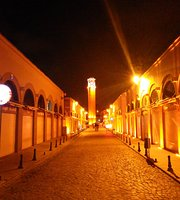
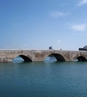

Büyük Saat, Türkiye'deki en uzun saat kulesidir ve uzunluğu 32 metredir. Saat kulesi Adana'nın Seyhan ilçesinde bulunur.
Varda Köprüsü, Almanlar tarafından, çelik kafes taş örme tekniği ile yapılmıştır. 6. Bölge sınırları içinde bulunmaktadır. 1912 yılında hizmete açılmıştır. Köprünün yapılış amacı İstanbul-Bağdat-Hicaz Demiryolu hattını tamamlamaktır.

Taşköprü, Seyhan Nehri üzerinde, Adana kent merkezinde, Adana ve Karşıyaka yakalarını birleştiren köprüdür. Taşköprü - Eski Valilik semtinden görüntüsü Adana'nın simgesi olarak kabul edilen köprü, bir Roma dönemi eseridir.